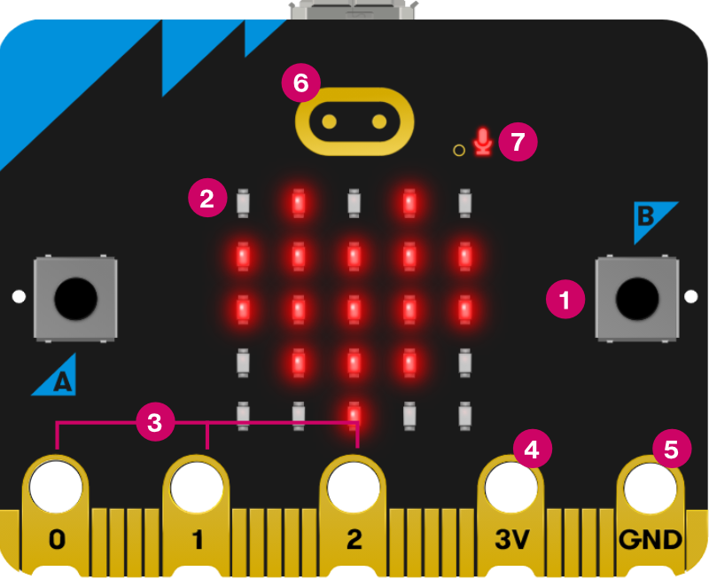
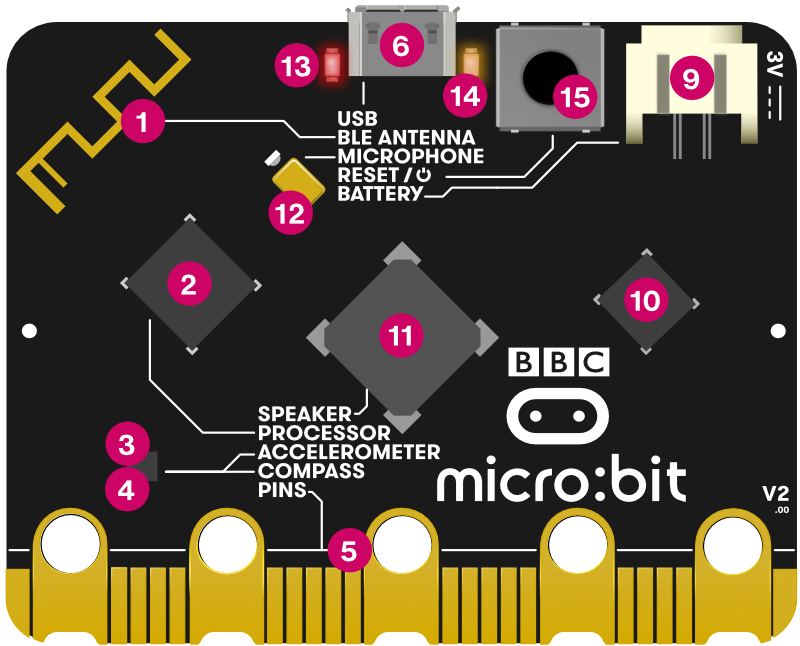
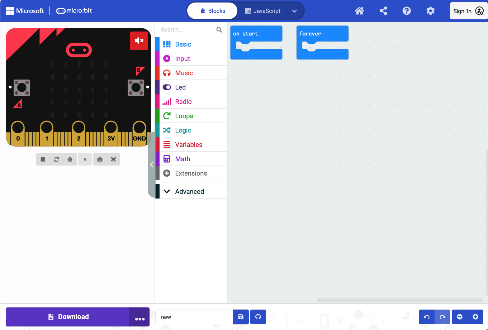

Smart greenhouses: microcontrollers, sensors and actuators
Module in Introduction to Bioinformatics
This lecture
- What is a microcontroller?
- Signals: digital, analog and serial
- Sensors and actuators for a greenhouse
- The kit: micro:bit and Sensorbit
- Programming with MakeCode
- In class
What is a microcontroller?
The routine in a greenhouse
Think about what a farmer does every morning in a greenhouse:
- They sense: check the thermometer, feel the soil
- They decide: is it too warm? too dry?
- They act: open a vent, water the bed
A microcontroller does the same, with electricity instead of judgement. It never sleeps in, and it checks every two seconds.
Sense → decide → act
Microcontroller system
- A sensor measures something and sends a signal to the microcontroller
- The program reads the signal and decides what to do
- The microcontroller sends a signal to an actuator, which does something in the world
Example: the greenhouse gets too warm. The temperature sensor reads 31 °C, the program checks “above 28 °C?”, and a servo opens the roof vent.
What is a microcontroller?
A small, self-contained computer on a single chip:
- a processor: runs the instructions, one step at a time
- memory: holds the program and temporary data
- input/output pins: where signals come in from sensors and go out to actuators
They are cheap, low-power and reliable, so they suit places with little staff and unreliable power: irrigation timers, incubators, fridges, insulin pumps.
The BBC micro:bit: front

- buttons A and B
- LED display: 5×5 LEDs, also a light sensor
- pins 0, 1, 2: inputs and outputs
- 3V pin: power
- GND pin: ground
- touch logo: touch sensor
- microphone LED
The BBC micro:bit: back

- radio and Bluetooth antenna
- processor, with the temperature sensor
- compass
- accelerometer: movement and tilt
- pins: the edge connector
- micro USB socket
- battery socket
- USB interface chip
- speaker
- microphone
- red power LED
- yellow USB LED: flashes while a program is copied
- reset and power button
Signals
Two types
Digital
- two states: on/off, 1/0
- like a light switch
- a button press, “motion / no motion”
Analog
- a continuous scale
- like a dimmer switch
- soil moisture, light level
- converted to a number by an analog-to-digital converter (ADC): on the micro:bit, 0 to 1023
A third type: serial
- Some sensors send a fast, timed series of digital pulses that together encode a number: like morse code and not a light switch.
- We have one in our kit: the DHT11 sends temperature and humidity in one stream of 40 pulses.
- A software library (the Elecfreaks extension) decodes it: you use one block and get a number.
As programmers we need to know the signal type.
Sensors and actuators for a greenhouse
Sensors you will encounter today (1/2)
Measuring the environment:
| Sensor | What it measures | Signal type | Example use |
|---|---|---|---|
| DHT11 | Temperature and humidity | Digital (serial) | Monitor storage conditions for vaccines or grain |
| Soil moisture | Water content in soil | Analog | Trigger irrigation when soil is too dry |
| UV | Ultraviolet light intensity | Analog | Measure sun exposure; optimise plant growth |
| MQ3 alcohol | Alcohol vapor in air | Analog | Screen for alcohol in breath; monitor fermentation |
Sensors you will encounter today (2/2)
Detecting events:
| Sensor | What it measures | Signal type | Example use |
|---|---|---|---|
| PIR | Movement of warm bodies | Digital | Detect a patient entering a room; scare animals from crops |
| Crash sensor | Physical contact / pressure | Digital | Detect if a door or container has been opened |
All components are described in The kit: sensors and actuators. Use this page as a reference during the exercises.
Every sensor has limits
Before you trust a sensor, ask:
| Question | Example |
|---|---|
| Does it measure the right thing? | soil moisture cannot measure air humidity |
| Is the range right? | the DHT11 stops at 50 °C and at 90 % humidity |
| Is it accurate enough? | ±2 °C is fine for a vent, not for a lab instrument |
| Is it fast enough? | one reading every 2 s is fine for a greenhouse |
| Will it degrade? | soil probes corrode: plan for maintenance |
Outputs and actuators
Showing information
- OLED screen: text and numbers, for readings
- Rainbow LED: a strip of colour LEDs (Neopixel), for green / amber / red status
Acting in the world
- Servo motor: turns to an angle (0–180°) and holds it: a vent flap, a valve
- DC motor with fan: spins: ventilation
Motors draw a lot of current. On USB power alone the micro:bit may be too weak and you will have to use a battery pack.
Programming with MakeCode
Similar to R, bash, other languages
A program is a list of instructions:
- Read the temperature ← measure (variable)
- If it is above 28 °C, open the vent ← decide (if)
- Otherwise, close the vent ← decide (else)
- Wait 2 seconds, then start again ← wait, repeat (loop)
Remember: the micro:bit does exactly what you write. Make sure to test your program, also for situations you did not plan for.
MakeCode

makecode.microbit.org: opens in the browser.
- Simulator (left), toolbox (middle), workspace (right).
coding blocks
makecode.microbit.org: opens in the browser.
The blocks are color coded and snap together where they fit. You can also switch to program in Python or JavaScript.
Blocks: on start and forever
on startruns once, at power-on: used for setupforeverrepeats as long as there is power: used for monitoring
on start:
show "Ready"
forever:
read temperature
if temperature > 28:
show warning icon
else:
show temperature
wait 2 secondsVariables
A variable can take on values that change, such as a sensor reading. You have seen them in R, Python, bash…
forever:
set `moisture` to [analog read pin P2]
show “Soil: “ + `moisture` on the OLED
moistureis the variable and holds a number, which is read and changes every loop"Soil: "is text (a string), which stays the same
Conditionals
if moisture < 300:
LEDs red # dry: water now
else if moisture < 600:
LEDs orange # moist
else:
LEDs green # wet enough
- Conditionals are checked and executed from top to bottom; only the first true branch runs.
- Available operators:
>,<,=,≥,≤
Loops
A loop repeats a block of instructions. There are different flavours:
forever: repeats as long as there is powerrepeat N times: e.g. blink the LEDs 5 timeswhilea condition is true: e.g. sound an alarm while the soil is dry
A loop whose condition never becomes false never stops. Always make sure a loop has a clear exit condition.
Getting the program onto the micro:bit
- Connect the micro:bit with a USB cable: it shows up as a drive called MICROBIT
- In MakeCode, click Download and you get a
.hexfile - Drag the
.hexfile onto the MICROBIT drive - The orange LED flashes while it writes; when it stops, your program is ready to execute
You cannot break the micro:bit with a bad program. Do not be afraid to play around and change it, download and try it again.
In class
The exercises
| Exercise | Sensor | Output | |
|---|---|---|---|
| 1 | Push the button | built-in | LED matrix |
| 2 | Greenhouse climate monitor | DHT11 | OLED + LED matrix |
| 3 | Irrigation alarm | soil moisture | OLED + Rainbow LED |
| ★ | Mini challenge | your choice | your choice |
Team up in groups of 4–5, every team will get one micro:bit and kit.
Summary
- A microcontroller has a processor, memory and input/output pins
- Every system follows sense → decide → act
- Signals are digital, analog or serial; every sensor has limits
- Wiring: G to G, V to V, S to S
- MakeCode:
on startonce,foreverrepeats; variables, conditionals, loops - Before class: take the lecture quiz in Canvas

Smart greenhouses · Introduction to Bioinformatics